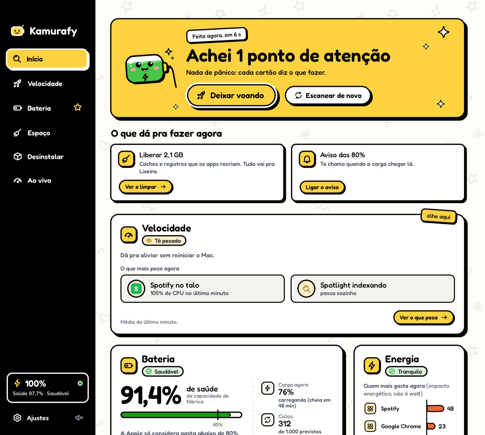
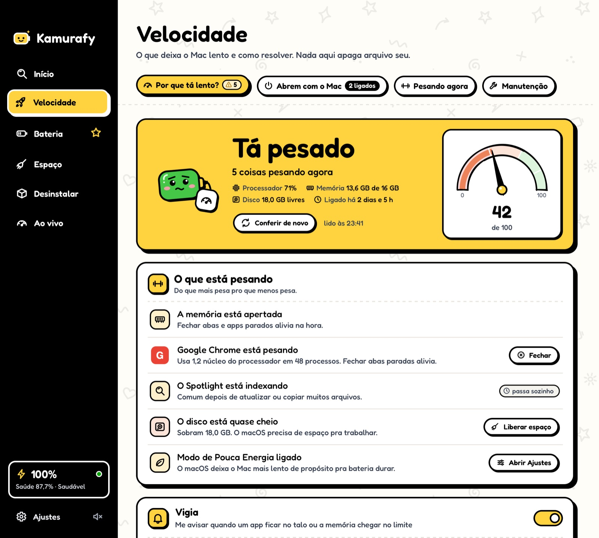
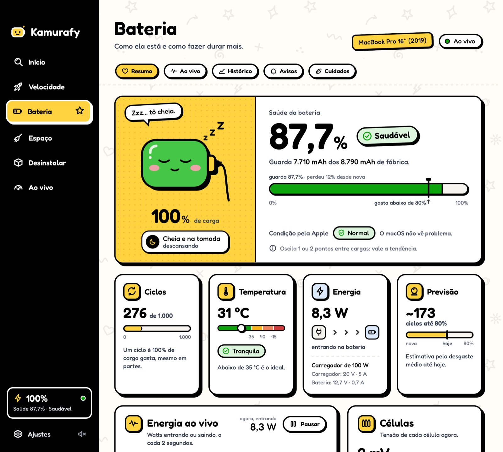
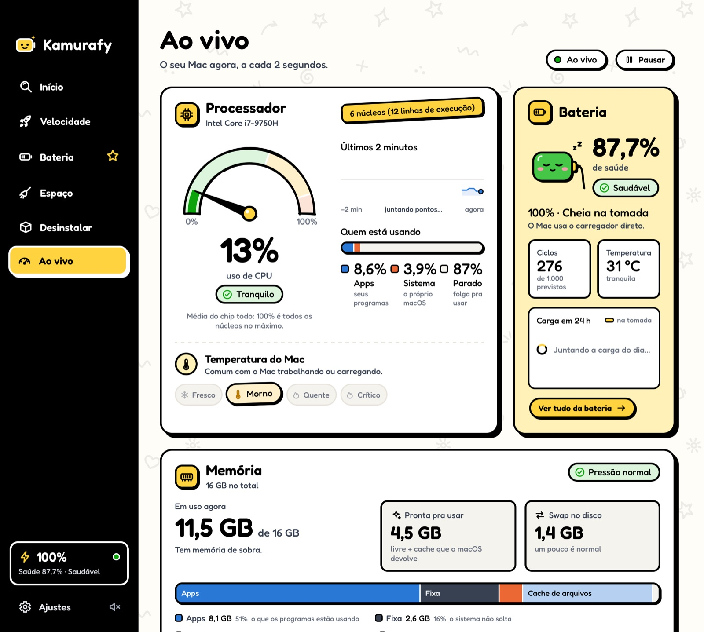
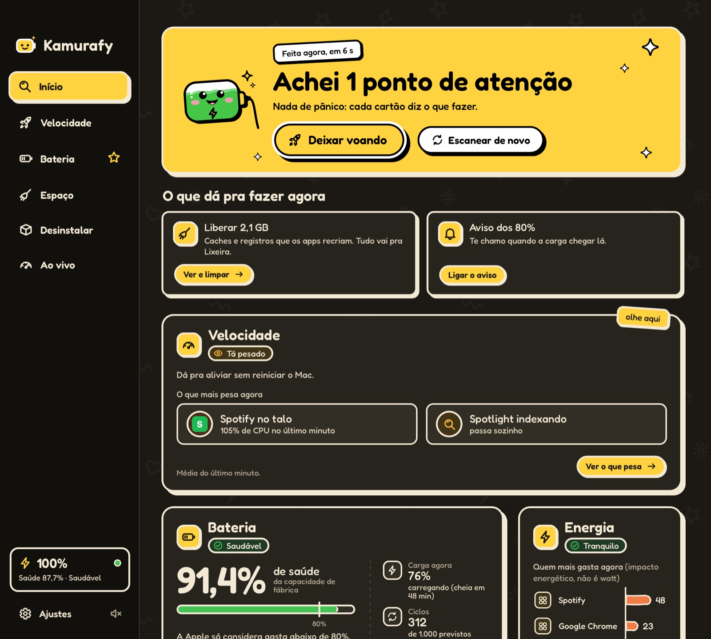

Início · Deixar voando
Uma varredura, um botão.
Confere bateria, memória, processador, velocidade e disco. Depois o Deixar voando faz as correções seguras de uma vez, quando você confirma.


Cuida do seu Mac e,
principalmente, da sua bateria.
A alternativa grátis e de código aberto ao CleanMyMac. Sem assinatura, sem conta, sem anúncio e sem coleta de dados.
macOS 13 ou mais novo · Intel e Apple Silicon
Oi! Deixa a bateria comigo.
Um clique mostra o que está pesando agora, em ordem, com a solução de cada um. Sem botão de “liberar RAM” e sem turbo de mentira.

Cada tela diz o que achou e o que isso quer dizer, e deixa você decidir.
Por que o Mac tá lento: o que pesa agora, com a solução de cada um.
Faz as correções seguras de uma vez, só depois que você confere.
Avisa quando um app fica no talo ou a memória chega no limite.
Saúde de verdade, ciclos, calor, 7 dias de carga e aviso nos 80%.
Caches, registros, downloads esquecidos, arquivos grandes e duplicados, pra Lixeira.
Tira o app junto com as sobras que ele espalha pela sua pasta.
Processador, memória, disco e bateria ao vivo, e a bateria na barra de menus.
Uns 180 MB aberto e parado, quase nada de processador. Modo escuro e 3 idiomas.
Confere bateria, memória, processador, velocidade e disco. Depois o Deixar voando faz as correções seguras de uma vez, quando você confirma.

Medida do jeito que o macOS mede, com ciclos, calor, os últimos 7 dias e uma previsão honesta até 80%.

Processador, memória, disco e bateria a cada 2 segundos, e por que “liberar RAM” não ajuda.

Segue o tema do macOS e fala português, inglês e espanhol.

As regras estão no código, e o código está aberto pra quem quiser conferir.
Está tudo no GitHub, sob a GPL-3.0: dá pra ler, conferir e compilar você mesmo.
Você vê a lista e confirma antes. Dá pra desfazer com um clique.
Testes automáticos rodam a limpeza numa pasta de mentira cheia de armadilhas.
Sem anúncio e sem telemetria. O que ele lê fica no seu Mac.
O aviso de versão nova, que vem desligado. Se você ligar, uma vez por dia ele pergunta ao GitHub qual é a última versão, e mais nada.
Só pastas conhecidas da sua pasta de usuário. Nada do sistema, sem senha de administrador, e arquivo pessoal nunca vem marcado.
Ler as regras da limpezamacOS 13 (Ventura) ou mais novo, em Mac Intel e Apple Silicon.
Baixe o Kamurafy.dmg, abra e arraste o Kamurafy pra pasta Aplicativos:
KamurafyAplicativos
Abra o Kamurafy, feche o aviso e vá em:
Ajustes do SistemaPrivacidade e SegurançaAbrir Mesmo Assim
Na pasta Aplicativos, clique no Kamurafy com o botão direito e confirme:
botão direitoAbrirAbrir
Prefere o Homebrew?
brew install --cask gabrielkamura/tap/kamurafy
Por que esse aviso? O Kamurafy ainda não é assinado com uma conta paga de desenvolvedor da Apple, então o macOS pede que você confirme uma vez. Se preferir, dá pra ler o código ou compilar você mesmo.
Grátis, sem conta e sem anúncio.
macOS 13 ou mais novo · Intel e Apple Silicon